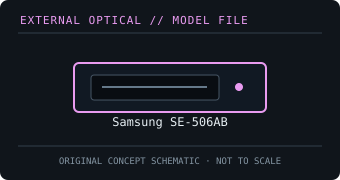

[ OPTICAL DRIVES // IDENTIFIED EXTERNAL MODEL ]
Samsung SE-506AB
Slim, bus-powered external Blu-ray writer with USB 2.0. The SE-506AB is a separate model from the SE-506CB already catalogued in this archive.

IDENTIFICATION: Confirm the full model/suffix against the label and manufacturer documentation. Read capability is not write capability; speed ratings depend on media and recording mode.
Model-specific specifications
| Catalog subcategory | External Blu-ray drives |
|---|---|
| Exact product identifier | Samsung SE-506AB |
| Supported write formats / rates | BD-R and BD-R DL up to 6×; BD-RE and BD-RE DL up to 2×. DVD±R up to 8×, DVD±R DL up to 6×, DVD-RAM up to 5×, CD-R up to 24× and CD-RW up to 24×. |
| Supported read formats / rates | Reads BD-ROM (including supported single/dual-layer discs), BD-R/RE, DVD-ROM up to 8× and CD-ROM up to 24×; the manual lists DVD±R/RW, DVD-RAM and CD-R/RW media support. |
| USB interface and power | USB 2.0 external interface and bus power; no separate power adapter is normally required. USB 1.1 hosts may connect at reduced performance; use a suitable direct USB port. |
| Host compatibility | Windows and Mac hosts are supported for applicable data functions. 3D/Blu-ray movie playback requires compatible playback software, display and host protection capabilities; support varies by OS and software version. |
| Model distinction | SE-506AB is not the later SE-506CB record. Verify model suffix before relying on bundled software, system support or rated media speeds. |
Host and media notes
SE-506AB is not the later SE-506CB record. Verify model suffix before relying on bundled software, system support or rated media speeds.
- Use the drive only with media types explicitly supported by the exact manual. BDXL, standard BD-R/RE and UHD Blu-ray are distinct capabilities.
- Check operating-system and playback/authoring application support independently; a USB connection alone does not provide Blu-ray codec, protected-video or UHD playback capability.
- For preservation work, record drive model/firmware, host interface, software, media type, checksums and read/verification errors with each image.
Model documentation and specification sources
- Samsung SE-506AB user manualModel-specific manual with media support, rated speeds and USB/host information.
- Samsung SE-506AB technical datasheetProduct-specific specification listing for the SE-506AB.
Manufacturer and manual speed ratings are maxima under supported media conditions and are not a guarantee of actual sustained read/write performance on an individual disc.